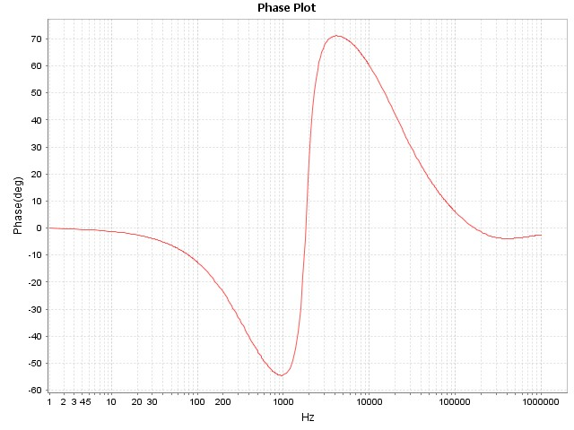

DCDT Report: Peak Current Mode
| Project Name | buck |
| Date | 7/31/2015 |
| Time | 12:38.50 |
Peak Current Mode
Inner Loop
Inner s-Domain
Closed Loop
Digital z-Domain
Analog s-Domain
Digital Nyquist
Digital Root Locus
Digital Step Response
Compensator Type: 2P2Z
Inputs
| Entry | Value |
|---|
| Pole 0 | 6.0420e+03 Hz |
| Pole 2 | 2.0854e+04 Hz |
| Zero 1 | 2.0000e+02 Hz |
| Gain(Kdc) | 1.000 |
| Warp | false |
| PWM Frequency | 3.5000e+05 |
| PWM Sampling Ratio | 2 |
| Sampling Frequency | 1.7500e+05 |
| PWM Max Resolution | 1.0600e-09 |
| Computational Delay | 3.0000e-07 |
| Control Output Min. | 0 |
| Control Output Max. | 4095 |
| Kuc Gain | 6.7356e-01 |
| Use Kuc Gain | false |
PWM Calculations
| Name | Value |
|---|
| Bits of Resolution | 12.396 |
| Gain | 1.855e-04 |
Digital Compensator Coefficients
| Name | Value | Normalized | Q15 | Hex |
|---|
| a1 | 1.455 | 0.176 | 5773 | 0x168D |
| a2 | -0.455 | -0.055 | -1805 | 0xF8F3 |
| b0 | 8.259 | 1.000 | 32764 | 0x7FFC |
| b1 | 0.059 | 0.007 | 234 | 0x00EA |
| b2 | -8.199 | -0.993 | -32530 | 0x80EE |
s-Domain
Wp0 Wp2(Wz1 + s)
H(s) = Kdc X --- X ------------
s Wz1(Wp2 + s)
3.80e+04 1.31e+05(1.26e+03 + s)
H(s) = 1.000 X -------- X ----------------------
s 1.26e+03(1.31e+05 + s)
z-Domain
u(z) B0 + B1z^(-1) + B2z^(-2)
H(z) = --- = ------------------------
e(z) A0 - A1z^(-1) - A2z^(-2)
(8.259) + (0.059)z^(-1) + (-8.199)z^(-2)
H(z) = ---------------------------------------------
1 - (1.455)z^(-1) - (-0.455)z^(-2)
Comparator
Inputs
| Entry | Value |
|---|
| Comparator Latency Delay | 3.0000e-08 s |
| Comparator Max. Input Voltage | 1.650 v |
| Gate Drive Delay | 1.3000e-07 s |
| Modulator Gain(Fm) | 2.7700e-01 |
| DAC Resolution | 10-bit |
| DAC Settling Time | 1.5000e-06 s |
| DAC Voltage Reference | 1.650 v |
Plant Type Gid: Polynomial
Inputs
| Entry | Value |
|---|
| a0 | 5.685e+08 |
| a1 | 4.091e+05 |
| |
| b0 | 1.3880e+08 |
| b1 | 4.5200e+03 |
| b2 | 1.0000e+00 |
s-Domain
a0 + a1(s^1)
Hsys(s) = ------------------------
b0 + b1(s^1) + b2(s^2)
5.6850e+08 + 4.0910e+05(s^1)
Hsys(s) = ------------------------------------------------
1.3880e+08 + 4.5200e+03(s^1) + 1.0000e+00(s^2)
Feedback Type Hfb_current: Fixed Gain
Inputs
| Entry | Value |
|---|
| Gain | 9.600e-01 |
| Bandwidth | 3.000e+05 |
s-Domain
BW(2pi)
H(s) = Kvadc X -----------
BW(2pi) + s
1.885e+06
H(s) = 0.960 X -------------
1.885e+06 + s
Plant Type Gvd: Polynomial
Inputs
| Entry | Value |
|---|
| a0 | 1.238e+09 |
| a1 | 2.000e+04 |
| |
| b0 | 1.3880e+08 |
| b1 | 4.5200e+03 |
| b2 | 1.0000e+00 |
s-Domain
a0 + a1(s^1)
Hsys(s) = ------------------------
b0 + b1(s^1) + b2(s^2)
1.2380e+09 + 2.0000e+04(s^1)
Hsys(s) = ------------------------------------------------
1.3880e+08 + 4.5200e+03(s^1) + 1.0000e+00(s^2)
Feedback Type Hfb_voltage: RC Network
Inputs
| Entry | Value |
|---|
| R1 | 1.1000e+03 |
| R2 | 3.1600e+03 |
| C1 | 1.8000e-09 |
| ADC Resolution | 12-bit |
| ADC Conv. Latency | 3.00e-07 |
| ADC Operating Voltage | 3.30 |
| Output | 5.00 |
ADC Calculations
| Entry | Value |
|---|
| Sense Output | 3.709 |
| Counts Sense | 4603 |
| Pre-Shift | 3 |
s-Domain
Kvadc
H(s) = -----------
1 + ReqC(s)
7.418e-01
H(s) = ---------------------------
1 + 8.16e+02(1.800e-09)(s))